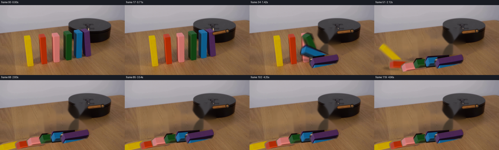
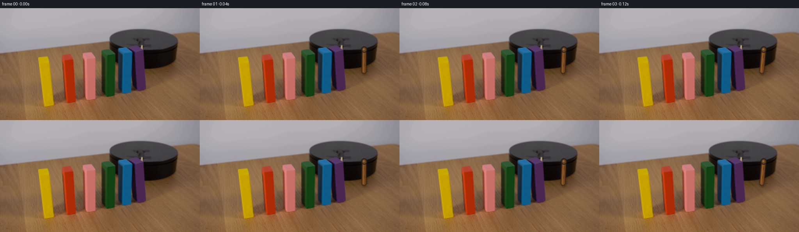

CODING AGENTS AS PIXEL WORLD MODELS
traex/GPT-5.6-Sol · 0034
点击播放 · 原生 RGB 像素
逐轮保存的候选
回放视频、检查图与代码变化。
每份候选均可单独播放。实际图片检查记录在下方工具轨迹中。
候选 01播放与检查图
点击播放 · 原生 RGB 像素


展开代码变化
--- 上一保存版本
+++ 本次保存版本
@@ -0,0 +1,223 @@
+"""Generate the requested locked-camera scientific domino demonstration.
+
+The animation is built only from first_frame.png and numeric image operations.
+The colored blocks retain their photographed texture: each is segmented from the
+source frame and moved as a rigid planar sprite about its table contact point.
+"""
+from pathlib import Path
+import math
+import cv2
+import numpy as np
+from PIL import Image, ImageDraw
+import artifact_io
+
+CASE_DIR = Path(__file__).resolve().parent
+W, H, N, FPS = 512, 288, 120, 24
+
+
+def smooth_mask(poly, blur=0.55):
+ """Rasterize a polygon with a subtly antialiased boundary."""
+ m = np.zeros((H, W), np.uint8)
+ cv2.fillPoly(m, [np.asarray(poly, np.int32)], 255, lineType=cv2.LINE_AA)
+ if blur:
+ m = cv2.GaussianBlur(m, (0, 0), blur)
+ return m
+
+
+def alpha_over(dst, src, alpha):
+ a = alpha.astype(np.float32)[..., None] / 255.0
+ return np.clip(dst.astype(np.float32) * (1.0 - a) + src.astype(np.float32) * a, 0, 255).astype(np.uint8)
+
+
+def make_clean_background(source, polys):
+ """Reconstruct the portions of table/platform hidden by upright blocks."""
+ hard = np.zeros((H, W), np.uint8)
+ for p in polys:
+ cv2.fillPoly(hard, [np.asarray(p, np.int32)], 255)
+ # Include the dark outlines and tiny cast fringes of the original standing pieces.
+ hard = cv2.dilate(hard, np.ones((5, 5), np.uint8), iterations=1)
+ bg = cv2.inpaint(source, hard, 7, cv2.INPAINT_TELEA)
+
+ # Telea is very good at the narrow gaps but can become too smooth in the centers
+ # of these tall objects. Add low-amplitude photographed wood grain from the clean
+ # left edge, only on the tabletop and only inside the repaired area.
+ strip = source[:, 4:92]
+ grain = cv2.resize(strip, (W, H), interpolation=cv2.INTER_LINEAR).astype(np.float32)
+ broad = cv2.GaussianBlur(grain, (0, 0), 6)
+ residual = grain - broad
+ table = (np.indices((H, W))[0] >= 150) & (hard > 0)
+ bf = bg.astype(np.float32)
+ bf[table] += 0.24 * residual[table]
+ return np.clip(bf, 0, 255).astype(np.uint8), hard
+
+
+def arm_state(t):
+ """Clockwise sweep in screen coordinates: down (90°) to left (174°)."""
+ if t <= 0:
+ return 90.0
+ u = np.clip(t / 20.0, 0.0, 1.0)
+ # A laboratory arm starts gently, then accelerates into the strike.
+ e = u * u * (3.0 - 2.0 * u)
+ angle = 90.0 + 84.0 * e
+ if t > 20:
+ # Small, rapidly damped recoil after contact, without reversing the event.
+ q = t - 20.0
+ angle = 174.0 - 3.0 * math.exp(-q / 8.0) * math.sin(q * 0.48)
+ return angle
+
+
+def fall_state(block_index, t):
+ """Rigid-body domino angle in degrees, positive tipping toward screen-left."""
+ # Impact propagates from the platform-adjacent purple piece toward yellow.
+ start = {5: 20.0, 4: 25.0, 3: 30.0, 2: 35.0, 1: 40.0, 0: 45.0}[block_index]
+ duration = 15.0
+ q = t - start
+ if q <= 0:
+ return 0.0
+ if q < duration:
+ u = q / duration
+ # Increasing angular speed under gravity, softened close to the tabletop.
+ progress = math.sin(0.5 * math.pi * u) ** 1.55
+ return 96.0 * progress
+ # A tiny damped impact bounce gives weight while preserving the final rest pose.
+ r = q - duration
+ return 96.0 + 2.2 * math.exp(-r / 7.0) * math.sin(r * 0.92)
+
+
+def line_layer(base, p0, p1, color, width, opacity, shadow=False):
+ mask = np.zeros((H, W), np.uint8)
+ cv2.line(mask, p0, p1, 255, width, cv2.LINE_AA)
+ if shadow:
+ mask = cv2.GaussianBlur(mask, (0, 0), 2.0)
+ mask = np.clip(mask.astype(np.float32) * opacity, 0, 255).astype(np.uint8)
+ layer = np.empty_like(base)
+ layer[:] = color
+ return alpha_over(base, layer, mask)
+
+
+def draw_arm(frame, t):
+ """Render the attached, cylindrical wooden striker and its fixed pivot."""
+ pivot = np.array([421.0, 106.0])
+ theta = math.radians(arm_state(t))
+ length = 57.5
+ end = pivot + length * np.array([math.cos(theta), math.sin(theta)])
+ p0 = tuple(np.rint(pivot).astype(int))
+ p1 = tuple(np.rint(end).astype(int))
+ # Keep the first transition gentle; initially the dark arm lies against the
+ # similarly dark platform and becomes clearer as it swings out.
+ opacity = 0.78 + 0.18 * np.clip(t / 6.0, 0.0, 1.0)
+ out = frame
+ out = line_layer(out, (p0[0] + 2, p0[1] + 3), (p1[0] + 2, p1[1] + 3),
+ (30, 20, 14), 13, 0.34 * opacity, shadow=True)
+ out = line_layer(out, p0, p1, (62, 35, 18), 11, opacity)
+ out = line_layer(out, p0, p1, (126, 76, 34), 7, opacity)
+
+ # Warm directional highlight and two understated grain marks.
+ normal = np.array([-math.sin(theta), math.cos(theta)])
+ hp0 = tuple(np.rint(pivot + normal * 1.4).astype(int))
+ hp1 = tuple(np.rint(end + normal * 1.4).astype(int))
+ out = line_layer(out, hp0, hp1, (174, 116, 60), 2, 0.52 * opacity)
+ direction = (end - pivot) / length
+ for f0, f1 in ((0.22, 0.40), (0.61, 0.78)):
+ q0 = tuple(np.rint(pivot + direction * length * f0 - normal * 1.2).astype(int))
+ q1 = tuple(np.rint(pivot + direction * length * f1 - normal * 1.2).astype(int))
+ out = line_layer(out, q0, q1, (73, 40, 20), 1, 0.7 * opacity)
+
+ # Fixed axle cap: dark outer washer, warm wood center, pinpoint reflection.
+ overlay = np.zeros_like(out)
+ am = np.zeros((H, W), np.uint8)
+ cv2.circle(am, p0, 8, int(235 * opacity), -1, cv2.LINE_AA)
+ cv2.circle(overlay, p0, 8, (35, 31, 29), -1, cv2.LINE_AA)
+ cv2.circle(overlay, p0, 5, (102, 67, 36), -1, cv2.LINE_AA)
+ cv2.circle(overlay, (p0[0] - 1, p0[1] - 1), 2, (164, 117, 68), -1, cv2.LINE_AA)
+ out = alpha_over(out, overlay, am)
+ return out
+
+
+def add_domino_shadows(frame, angles, pivots, heights, active):
+ shadow = np.zeros((H, W), np.uint8)
+ for i, (ang, pivot, height) in enumerate(zip(angles, pivots, heights)):
+ if not active[i]:
+ continue
+ r = math.radians(ang)
+ reach = height * math.sin(r)
+ cx = int(round(pivot[0] - 0.48 * reach))
+ cy = int(round(pivot[1] + 4 + 0.035 * reach))
+ axes = (max(8, int(abs(reach) * 0.52)), 7)
+ cv2.ellipse(shadow, (cx, cy), axes, 0, 0, 360, 76, -1, cv2.LINE_AA)
+ shadow = cv2.GaussianBlur(shadow, (0, 0), 3.2)
+ dark = np.zeros_like(frame)
+ return alpha_over(frame, dark, shadow)
+
+
+def generate():
+ source = np.asarray(Image.open(CASE_DIR / "first_frame.png").convert("RGB"), dtype=np.uint8)
+ assert source.shape == (H, W, 3)
+
+ # Polygons include each cuboid's lit top, front, side face, and dark rim.
+ polys = [
+ [(94, 125), (116, 119), (124, 120), (131, 141), (141, 250), (136, 256), (112, 258), (102, 252)],
+ [(155, 118), (177, 113), (184, 115), (192, 128), (208, 233), (202, 240), (190, 246), (170, 246), (162, 228)],
+ [(209, 114), (231, 109), (238, 111), (249, 132), (248, 233), (242, 238), (221, 241), (214, 227)],
+ [(257, 109), (279, 102), (286, 104), (300, 116), (298, 222), (292, 229), (272, 231), (259, 213)],
+ [(299, 102), (320, 96), (327, 97), (344, 109), (340, 215), (334, 221), (314, 223), (299, 202)],
+ [(327, 101), (343, 92), (359, 93), (373, 108), (378, 207), (372, 213), (356, 218), (337, 202)],
+ ]
+ pivots = [(124, 253), (188, 242), (234, 236), (283, 226), (326, 218), (364, 212)]
+ heights = [132, 126, 124, 121, 120, 118]
+ masks = [smooth_mask(p) for p in polys]
+ clean_bg, _ = make_clean_background(source, polys)
+
+ # Full-sized sparse source layers permit a single, stable affine pivot for each
+ # irregular photographed cuboid and retain subtle shading and wooden grain.
+ sprites = []
+ for m in masks:
+ layer = np.zeros_like(source)
+ layer[m > 0] = source[m > 0]
+ sprites.append(layer)
+
+ def render_at(t):
+ angles = [fall_state(i, t) for i in range(6)]
+ active = [abs(a) > 0.025 for a in angles]
+ canvas = source.copy()
+
+ # Reveal reconstructed platform/table only where a block has actually moved.
+ for i in range(6):
+ if active[i]:
+ a = masks[i].astype(np.float32)[..., None] / 255.0
+ canvas = np.clip(canvas.astype(np.float32) * (1.0 - a) + clean_bg.astype(np.float32) * a,
+ 0, 255).astype(np.uint8)
+
+ canvas = draw_arm(canvas, t)
+ canvas = add_domino_shadows(canvas, angles, pivots, heights, active)
+
+ # Left pieces first, right pieces last: the striker-side dominoes naturally
+ # appear on top as the cascade overlaps and comes to rest.
+ for i in range(6):
+ if not active[i]:
+ continue
+ M = cv2.getRotationMatrix2D(tuple(map(float, pivots[i])), angles[i], 1.0)
+ moved_rgb = cv2.warpAffine(sprites[i], M, (W, H), flags=cv2.INTER_CUBIC,
+ borderMode=cv2.BORDER_CONSTANT, borderValue=0)
+ moved_a = cv2.warpAffine(masks[i], M, (W, H), flags=cv2.INTER_LINEAR,
+ borderMode=cv2.BORDER_CONSTANT, borderValue=0)
+ canvas = alpha_over(canvas, moved_rgb, moved_a)
+ return canvas
+
+ frames = np.empty((N, H, W, 3), np.uint8)
+ frames[0] = source # Generation contract: pixel-identical first frame.
+ offsets = (-0.22, 0.0, 0.22)
+ for f in range(1, N):
+ # Three temporal samples provide restrained real-camera motion blur while
+ # maintaining the requested constant 24 fps and locked viewpoint.
+ samples = [render_at(max(0.0, f + o)).astype(np.float32) for o in offsets]
+ frames[f] = np.clip(np.mean(samples, axis=0), 0, 255).astype(np.uint8)
+
+ assert frames.shape == (N, H, W, 3) and frames.dtype == np.uint8
+ assert np.array_equal(frames[0], source)
+ artifact_io.save(frames, CASE_DIR)
+ return frames
+
+
+if __name__ == "__main__":
+ generate()
可观测工具轨迹
实际执行的命令与返回图片。
命令 1exit 0
/bin/bash -lc "cat prompt.txt && printf '\\n--- GENERATION_RULES ---\\n' && cat GENERATION_RULES.md"
命令 2exit 127
/bin/bash -lc "find . -maxdepth 2 -type f -printf '%p\\n' | sort && printf '\\n--- image metadata ---\\n' && file first_frame.png"
命令 3exit 0
/bin/bash -lc "cat task_spec.json && printf '\\n--- artifact_io.py ---\\n' && sed -n '1,260p' artifact_io.py"
命令 4exit 0
/bin/bash -lc "python - <<'PY'
from PIL import Image
import numpy as np
im=Image.open('first_frame.png').convert('RGB'); a=np.array(im)
print(im.size, a.dtype, a.min(),a.max())
# bands summary and common quantized colors
for name,sl in [('all',a),('top',a[:80]),('middle',a[80:210]),('bottom',a[210:])]:
print(name,'mean',sl.mean((0,1)),'std',sl.std((0,1)),'min',sl.reshape(-1,3).min(0),'max',sl.reshape(-1,3).max(0))
q=(a//16)*16
u,c=np.unique(q.reshape(-1,3),axis=0,return_counts=True)
for ix in np.argsort(c)[-25:][::-1]: print(c[ix],u[ix])
PY"命令 5exit 0
/bin/bash -lc "python - <<'PY'
try:
import cv2; print('cv2',cv2.__version__)
except Exception as e: print('no cv2',e)
try:
import scipy; print('scipy',scipy.__version__)
except Exception as e: print('no scipy',e)
PY"命令 6exit 0
/bin/bash -lc "python - <<'PY'
from PIL import Image
import numpy as np
from colorsys import rgb_to_hsv
a=np.array(Image.open('first_frame.png').convert('RGB'))
# grid classify 8x8 means by HSV-ish / darkness
chars=[]
for y in range(0,288,8):
row=''
for x in range(0,512,8):
p=a[y:y+8,x:x+8].mean((0,1)); r,g,b=p
mx=max(p); mn=min(p); d=mx-mn
if mx<35: c='K'
elif mx<65: c='k'
elif d<12: c='.' if mx>145 else ':'
elif r>g*1.45 and r>b*1.45: c='R'
elif r>110 and g>60 and r>g*1.2 and b<g*.95: c='O'
elif r>g*1.25 and b>g*1.15: c='P'
elif b>r*1.25 and b>g*1.1: c='B'
elif g>r*1.15 and g>b*1.2: c='G'
elif b>r*1.08: c='b'
elif r>g*1.15: c='w'
else:c=','
row+=c
print(f'{y:03d} '+row)
PY"命令 7exit 1
/bin/bash -lc "python - <<'PY'
import cv2,numpy as np
from PIL import Image
a=np.array(Image.open('first_frame.png').convert('RGB')); h=cv2.cvtColor(a,cv2.COLOR_RGB2HSV)
# components by color conditions within likely object y 75:230
conds={
'red':((h[:,:,0]<12)|(h[:,:,0]>170))&(h[:,:,1]>100),
'orange':(h[:,:,0]>=8)&(h[:,:,0]<28)&(h[:,:,1]>100),
'green':(h[:,:,0]>=30)&(h[:,:,0]<90)&(h[:,:,1]>80),
'blue':(h[:,:,0]>=90)&(h[:,:,0]<135)&(h[:,:,1]>80),
'purple':(h[:,:,0]>=135)&(h[:,:,0]<170)&(h[:,:,1]>60),
'dark':(h[:,:,2]<55)
}
for n,m in conds.items():
m=m.astype(np.uint8); N,lab,st,cent=cv2.connectedComponentsWithStats(m,8)
print('\\n',n,'total',m.sum())
for s,c in sorted(zip(st[1:],cent[1:]),key=lambda z:z[0,4],reverse=True)[:15]:
x,y,w,hh,area=s; print(' ',area,(x,y,w,hh),tuple(np.round(c,1)))
PY"命令 8exit 0
/bin/bash -lc "python - <<'PY'
import cv2,numpy as np
from PIL import Image
a=np.array(Image.open('first_frame.png').convert('RGB')); h=cv2.cvtColor(a,cv2.COLOR_RGB2HSV)
conds={'red':((h[:,:,0]<12)|(h[:,:,0]>170))&(h[:,:,1]>100),'orange':(h[:,:,0]>=8)&(h[:,:,0]<28)&(h[:,:,1]>100),'green':(h[:,:,0]>=30)&(h[:,:,0]<90)&(h[:,:,1]>80),'blue':(h[:,:,0]>=90)&(h[:,:,0]<135)&(h[:,:,1]>80),'purple':(h[:,:,0]>=135)&(h[:,:,0]<170)&(h[:,:,1]>60),'dark':(h[:,:,2]<55)}
for n,m in conds.items():
N,lab,st,cent=cv2.connectedComponentsWithStats(m.astype(np.uint8),8)
ids=sorted(range(1,N),key=lambda i:int(st[i,4]),reverse=True)[:15]
print('\\n',n,'total',int(m.sum()))
for i in ids:
x,y,w,hh,area=st[i]; print(' ',area,(x,y,w,hh),tuple(np.round(cent[i],1)))
PY"命令 9exit 0
/bin/bash -lc "python - <<'PY'
from PIL import Image
import numpy as np,cv2
a=np.array(Image.open('first_frame.png').convert('RGB')); hsv=cv2.cvtColor(a,cv2.COLOR_RGB2HSV)
# crop x180:480 y60:236, blocks 4x4, chars by hsv/color
for y in range(60,236,4):
row=''
for x in range(180,480,4):
p=np.median(a[y:y+4,x:x+4].reshape(-1,3),0); hh=np.median(hsv[y:y+4,x:x+4,0]); s=np.median(hsv[y:y+4,x:x+4,1]); v=np.median(hsv[y:y+4,x:x+4,2]);r,g,b=p
if v<25:c='#'
elif v<55:c='K'
elif s<25:c='.' if v>145 else ':'
elif s<55:c='s' if v>120 else 'd'
elif hh<8 or hh>=174:c='R'
elif hh<20:c='r'
elif hh<32:c='Y'
elif hh<50:c='G'
elif hh<90:c='g'
elif hh<115:c='B'
elif hh<140:c='b'
elif hh<165:c='P'
else:c='M'
row+=c
print(f'{y:03d} {row}')
PY"命令 10exit 0
/bin/bash -lc "python - <<'PY'
import cv2,numpy as np
from PIL import Image
a=np.array(Image.open('first_frame.png').convert('RGB'))
g=cv2.cvtColor(a,cv2.COLOR_RGB2GRAY)
for name,roi in [('all',(0,0,512,288)),('device',(340,45,480,180)),('blocks',(130,80,380,245))]:
x1,y1,x2,y2=roi
e=cv2.Canny(g[y1:y2,x1:x2],60,140)
lines=cv2.HoughLinesP(e,1,np.pi/180,threshold=25,minLineLength=20,maxLineGap=6)
print('\\n',name)
if lines is not None:
vals=[]
for l in lines[:,0]:
X1,Y1,X2,Y2=l+[x1,y1,x1,y1]; le=np.hypot(X2-X1,Y2-Y1); ang=np.degrees(np.arctan2(Y2-Y1,X2-X1));vals.append((round(le,1),round(ang,1),(X1,Y1,X2,Y2)))
for z in sorted(vals,reverse=True)[:50]:print(z)
PY"命令 11exit 0
/bin/bash -lc "python - <<'PY'
from PIL import Image
import numpy as np
im=np.array(Image.open('first_frame.png').convert('RGB'))
xs=[80,100,120,140,160,180,200,220,240,250,260,270,280,290,300,310,320,330,340,350,360,370,380,400,420,440,460]
ys=[50,70,85,95,105,115,125,140,160,180,200,215,230,245,260,280]
print('each RGB / dominant abbreviated')
for y in ys:
print('\\ny',y)
for x in xs:
print(x,tuple(im[y,x]),end='; ')
print()
PY"命令 12exit 0
/bin/bash -lc "python - <<'PY'
import numpy as np,cv2
from PIL import Image
a=np.array(Image.open('first_frame.png').convert('RGB'))
roi=a[35:180,270:480]
# kmeans colors
X=roi.reshape(-1,3).astype(np.float32)
crit=(cv2.TERM_CRITERIA_EPS+cv2.TERM_CRITERIA_MAX_ITER,50,.2)
_,lab,cen=cv2.kmeans(X,15,None,crit,10,cv2.KMEANS_PP_CENTERS)
for i,c in enumerate(cen):
n=(lab==i).sum(); print(i,n,np.round(c).astype(int))
# output 3x3 classified nearest manually K dark, wall ., table t, brown W, colors
for y in range(35,180,3):
row=''
for x in range(270,480,3):
p=np.median(a[y:y+3,x:x+3].reshape(-1,3),axis=0);r,g,b=p
# map colors more accurate
if max(p)<18:c='#'
elif max(p)<38:c='K'
elif max(p)<58:c='k'
elif max(p)<85 and max(p)-min(p)<20:c='D'
elif max(p)<110 and max(p)-min(p)<20:c='d'
elif max(p)-min(p)<15:c='.' if max(p)>135 else ':'
elif r>130 and abs(r-g)<15 and abs(g-b)<15:c=','
elif b>r*1.25:c='B'
elif g>r*1.2:c='G'
elif r>g*1.35 and b>g*1.25:c='P'
elif r>g*1.3 and g>b*1.15:c='R'
elif r>g*1.15 and g>b*1.15:c='w'
else:c='s'
row+=c
print(f'{y:03d} {row}')
PY"命令 13exit 0
/bin/bash -lc "python - <<'PY'
import cv2,numpy as np
from PIL import Image
a=np.array(Image.open('first_frame.png').convert('RGB'));h=cv2.cvtColor(a,cv2.COLOR_RGB2HSV)
rois=[('yellow',80,145,105,255),('red',140,205,100,252),('pink',200,260,95,240),('green',250,305,90,235),('blue',295,345,88,228),('purple',330,380,85,220)]
conds=[(h[:,:,0]>18)&(h[:,:,0]<38)&(h[:,:,1]>100)&(h[:,:,2]>90),((h[:,:,0]<10)|(h[:,:,0]>175))&(h[:,:,1]>100)&(h[:,:,2]>100),((h[:,:,0]<10)|(h[:,:,0]>170))&(h[:,:,1]>40)&(a[:,:,0]>150)&(a[:,:,1]>70),(h[:,:,0]>35)&(h[:,:,0]<85)&(h[:,:,1]>80),(h[:,:,0]>90)&(h[:,:,0]<130)&(h[:,:,1]>80),(h[:,:,0]>130)&(h[:,:,0]<175)&(h[:,:,1]>50)]
for (n,x1,x2,y1,y2),m in zip(rois,conds):
m=(m & (np.indices(m.shape)[1]>=x1)&(np.indices(m.shape)[1]<x2)&(np.indices(m.shape)[0]>=y1)&(np.indices(m.shape)[0]<y2)).astype(np.uint8)*255
c,_=cv2.findContours(m,cv2.RETR_EXTERNAL,cv2.CHAIN_APPROX_SIMPLE); c=max(c,key=cv2.contourArea); hull=cv2.convexHull(c); eps=cv2.approxPolyDP(hull,3,True)
print(n,'bbox',cv2.boundingRect(c),'approx',eps[:,0].tolist())
PY"命令 14exit 0
/bin/bash -lc "cat > generate.py <<'PY'
\"\"\"Generate the requested locked-camera scientific domino demonstration.
The animation is built only from first_frame.png and numeric image operations.
The colored blocks retain their photographed texture: each is segmented from the
source frame and moved as a rigid planar sprite about its table contact point.
\"\"\"
from pathlib import Path
import math
import cv2
import numpy as np
from PIL import Image, ImageDraw
import artifact_io
CASE_DIR = Path(__file__).resolve().parent
W, H, N, FPS = 512, 288, 120, 24
def smooth_mask(poly, blur=0.55):
\"\"\"Rasterize a polygon with a subtly antialiased boundary.\"\"\"
m = np.zeros((H, W), np.uint8)
cv2.fillPoly(m, [np.asarray(poly, np.int32)], 255, lineType=cv2.LINE_AA)
if blur:
m = cv2.GaussianBlur(m, (0, 0), blur)
return m
def alpha_over(dst, src, alpha):
a = alpha.astype(np.float32)[..., None] / 255.0
return np.clip(dst.astype(np.float32) * (1.0 - a) + src.astype(np.float32) * a, 0, 255).astype(np.uint8)
def make_clean_background(source, polys):
\"\"\"Reconstruct the portions of table/platform hidden by upright blocks.\"\"\"
hard = np.zeros((H, W), np.uint8)
for p in polys:
cv2.fillPoly(hard, [np.asarray(p, np.int32)], 255)
# Include the dark outlines and tiny cast fringes of the original standing pieces.
hard = cv2.dilate(hard, np.ones((5, 5), np.uint8), iterations=1)
bg = cv2.inpaint(source, hard, 7, cv2.INPAINT_TELEA)
# Telea is very good at the narrow gaps but can become too smooth in the centers
# of these tall objects. Add low-amplitude photographed wood grain from the clean
# left edge, only on the tabletop and only inside the repaired area.
strip = source[:, 4:92]
grain = cv2.resize(strip, (W, H), interpolation=cv2.INTER_LINEAR).astype(np.float32)
broad = cv2.GaussianBlur(grain, (0, 0), 6)
residual = grain - broad
table = (np.indices((H, W))[0] >= 150) & (hard > 0)
bf = bg.astype(np.float32)
bf[table] += 0.24 * residual[table]
return np.clip(bf, 0, 255).astype(np.uint8), hard
def arm_state(t):
\"\"\"Clockwise sweep in screen coordinates: down (90°) to left (174°).\"\"\"
if t <= 0:
return 90.0
u = np.clip(t / 20.0, 0.0, 1.0)
# A laboratory arm starts gently, then accelerates into the strike.
e = u * u * (3.0 - 2.0 * u)
angle = 90.0 + 84.0 * e
if t > 20:
# Small, rapidly damped recoil after contact, without reversing the event.
q = t - 20.0
angle = 174.0 - 3.0 * math.exp(-q / 8.0) * math.sin(q * 0.48)
return angle
def fall_state(block_index, t):
\"\"\"Rigid-body domino angle in degrees, positive tipping toward screen-left.\"\"\"
# Impact propagates from the platform-adjacent purple piece toward yellow.
start = {5: 20.0, 4: 25.0, 3: 30.0, 2: 35.0, 1: 40.0, 0: 45.0}[block_index]
duration = 15.0
q = t - start
if q <= 0:
return 0.0
if q < duration:
u = q / duration
# Increasing angular speed under gravity, softened close to the tabletop.
progress = math.sin(0.5 * math.pi * u) ** 1.55
return 96.0 * progress
# A tiny damped impact bounce gives weight while preserving the final rest pose.
r = q - duration
return 96.0 + 2.2 * math.exp(-r / 7.0) * math.sin(r * 0.92)
def line_layer(base, p0, p1, color, width, opacity, shadow=False):
mask = np.zeros((H, W), np.uint8)
cv2.line(mask, p0, p1, 255, width, cv2.LINE_AA)
if shadow:
mask = cv2.GaussianBlur(mask, (0, 0), 2.0)
mask = np.clip(mask.astype(np.float32) * opacity, 0, 255).astype(np.uint8)
layer = np.empty_like(base)
layer[:] = color
return alpha_over(base, layer, mask)
def draw_arm(frame, t):
\"\"\"Render the attached, cylindrical wooden striker and its fixed pivot.\"\"\"
pivot = np.array([421.0, 106.0])
theta = math.radians(arm_state(t))
length = 57.5
end = pivot + length * np.array([math.cos(theta), math.sin(theta)])
p0 = tuple(np.rint(pivot).astype(int))
p1 = tuple(np.rint(end).astype(int))
# Keep the first transition gentle; initially the dark arm lies against the
# similarly dark platform and becomes clearer as it swings out.
opacity = 0.78 + 0.18 * np.clip(t / 6.0, 0.0, 1.0)
out = frame
out = line_layer(out, (p0[0] + 2, p0[1] + 3), (p1[0] + 2, p1[1] + 3),
(30, 20, 14), 13, 0.34 * opacity, shadow=True)
out = line_layer(out, p0, p1, (62, 35, 18), 11, opacity)
out = line_layer(out, p0, p1, (126, 76, 34), 7, opacity)
# Warm directional highlight and two understated grain marks.
normal = np.array([-math.sin(theta), math.cos(theta)])
hp0 = tuple(np.rint(pivot + normal * 1.4).astype(int))
hp1 = tuple(np.rint(end + normal * 1.4).astype(int))
out = line_layer(out, hp0, hp1, (174, 116, 60), 2, 0.52 * opacity)
direction = (end - pivot) / length
for f0, f1 in ((0.22, 0.40), (0.61, 0.78)):
q0 = tuple(np.rint(pivot + direction * length * f0 - normal * 1.2).astype(int))
q1 = tuple(np.rint(pivot + direction * length * f1 - normal * 1.2).astype(int))
out = line_layer(out, q0, q1, (73, 40, 20), 1, 0.7 * opacity)
# Fixed axle cap: dark outer washer, warm wood center, pinpoint reflection.
overlay = np.zeros_like(out)
am = np.zeros((H, W), np.uint8)
cv2.circle(am, p0, 8, int(235 * opacity), -1, cv2.LINE_AA)
cv2.circle(overlay, p0, 8, (35, 31, 29), -1, cv2.LINE_AA)
cv2.circle(overlay, p0, 5, (102, 67, 36), -1, cv2.LINE_AA)
cv2.circle(overlay, (p0[0] - 1, p0[1] - 1), 2, (164, 117, 68), -1, cv2.LINE_AA)
out = alpha_over(out, overlay, am)
return out
def add_domino_shadows(frame, angles, pivots, heights, active):
shadow = np.zeros((H, W), np.uint8)
for i, (ang, pivot, height) in enumerate(zip(angles, pivots, heights)):
if not active[i]:
continue
r = math.radians(ang)
reach = height * math.sin(r)
cx = int(round(pivot[0] - 0.48 * reach))
cy = int(round(pivot[1] + 4 + 0.035 * reach))
axes = (max(8, int(abs(reach) * 0.52)), 7)
cv2.ellipse(shadow, (cx, cy), axes, 0, 0, 360, 76, -1, cv2.LINE_AA)
shadow = cv2.GaussianBlur(shadow, (0, 0), 3.2)
dark = np.zeros_like(frame)
return alpha_over(frame, dark, shadow)
def generate():
source = np.asarray(Image.open(CASE_DIR / \"first_frame.png\").convert(\"RGB\"), dtype=np.uint8)
assert source.shape == (H, W, 3)
# Polygons include each cuboid's lit top, front, side face, and dark rim.
polys = [
[(94, 125), (116, 119), (124, 120), (131, 141), (141, 250), (136, 256), (112, 258), (102, 252)],
[(155, 118), (177, 113), (184, 115), (192, 128), (208, 233), (202, 240), (190, 246), (170, 246), (162, 228)],
[(209, 114), (231, 109), (238, 111), (249, 132), (248, 233), (242, 238), (221, 241), (214, 227)],
[(257, 109), (279, 102), (286, 104), (300, 116), (298, 222), (292, 229), (272, 231), (259, 213)],
[(299, 102), (320, 96), (327, 97), (344, 109), (340, 215), (334, 221), (314, 223), (299, 202)],
[(327, 101), (343, 92), (359, 93), (373, 108), (378, 207), (372, 213), (356, 218), (337, 202)],
]
pivots = [(124, 253), (188, 242), (234, 236), (283, 226), (326, 218), (364, 212)]
heights = [132, 126, 124, 121, 120, 118]
masks = [smooth_mask(p) for p in polys]
clean_bg, _ = make_clean_background(source, polys)
# Full-sized sparse source layers permit a single, stable affine pivot for each
# irregular photographed cuboid and retain subtle shading and wooden grain.
sprites = []
for m in masks:
layer = np.zeros_like(source)
layer[m > 0] = source[m > 0]
sprites.append(layer)
def render_at(t):
angles = [fall_state(i, t) for i in range(6)]
active = [abs(a) > 0.025 for a in angles]
canvas = source.copy()
# Reveal reconstructed platform/table only where a block has actually moved.
for i in range(6):
if active[i]:
a = masks[i].astype(np.float32)[..., None] / 255.0
canvas = np.clip(canvas.astype(np.float32) * (1.0 - a) + clean_bg.astype(np.float32) * a,
0, 255).astype(np.uint8)
canvas = draw_arm(canvas, t)
canvas = add_domino_shadows(canvas, angles, pivots, heights, active)
# Left pieces first, right pieces last: the striker-side dominoes naturally
# appear on top as the cascade overlaps and comes to rest.
for i in range(6):
if not active[i]:
continue
M = cv2.getRotationMatrix2D(tuple(map(float, pivots[i])), angles[i], 1.0)
moved_rgb = cv2.warpAffine(sprites[i], M, (W, H), flags=cv2.INTER_CUBIC,
borderMode=cv2.BORDER_CONSTANT, borderValue=0)
moved_a = cv2.warpAffine(masks[i], M, (W, H), flags=cv2.INTER_LINEAR,
borderMode=cv2.BORDER_CONSTANT, borderValue=0)
canvas = alpha_over(canvas, moved_rgb, moved_a)
return canvas
frames = np.empty((N, H, W, 3), np.uint8)
frames[0] = source # Generation contract: pixel-identical first frame.
offsets = (-0.22, 0.0, 0.22)
for f in range(1, N):
# Three temporal samples provide restrained real-camera motion blur while
# maintaining the requested constant 24 fps and locked viewpoint.
samples = [render_at(max(0.0, f + o)).astype(np.float32) for o in offsets]
frames[f] = np.clip(np.mean(samples, axis=0), 0, 255).astype(np.uint8)
assert frames.shape == (N, H, W, 3) and frames.dtype == np.uint8
assert np.array_equal(frames[0], source)
artifact_io.save(frames, CASE_DIR)
return frames
if __name__ == \"__main__\":
generate()
PY
python generate.py"命令 15exit 0
/bin/bash -lc "python - <<'PY'
from PIL import Image
import numpy as np,cv2
a=np.array(Image.open('first_frame.png').convert('RGB'))
# print device 2px chars with more categories; rows y96:160 cols364:460
for y in range(94,162,2):
s=''
for x in range(360,462,2):
p=np.mean(a[y:y+2,x:x+2],(0,1));r,g,b=p
if max(p)<12:c='#'
elif max(p)<25:c='K'
elif max(p)<45:c='k'
elif max(p)<65:c='d'
elif max(p)<85 and max(p)-min(p)<20:c='D'
elif max(p)-min(p)<15:c='.'
elif r>g*1.5 and g>b*1.15:c='R'
elif r>g*1.25 and g>b*1.1:c='w'
elif r>g*1.15 and g>b*1.05:c='t'
elif b>r*1.2:c='B'
elif r>g*1.25 and b>g*1.2:c='P'
else:c='s'
s+=c
print(f'{y:03d} {s}')
PY
printf '\\n--- outputs ---\\n'
ls -lh generate.py pixels.npz inspection.png transition_check.png index.html frames/00.png frames/119.png
python - <<'PY'
from PIL import Image
import numpy as np,hashlib
s=np.array(Image.open('first_frame.png').convert('RGB')); f0=np.array(Image.open('frames/00.png'))
print('frame0 exact',np.array_equal(s,f0),hashlib.sha256(s.tobytes()).hexdigest())
for i in [0,1,5,10,15,20,24,30,36,45,60,80,119]:
a=np.array(Image.open(f'frames/{i:02d}.png'))
d=np.max(abs(a.astype(int)-s.astype(int)),axis=2); yy,xx=np.where(d>3)
print(i,'changed',len(xx),'MAD',np.abs(a.astype(int)-s.astype(int)).mean(), 'bbox',None if not len(xx) else (xx.min(),yy.min(),xx.max(),yy.max()))
PY"命令 16exit 0
/bin/bash -lc 'python -m py_compile generate.py artifact_io.py && git status --short 2>/dev/null || true'
命令 17exit 0
/bin/bash -lc "python - <<'PY'
from pathlib import Path
import numpy as np
from PIL import Image
root=Path('.')
fs=sorted((root/'frames').glob('*.png'),key=lambda p:int(p.stem))
assert len(fs)==120, len(fs)
a=np.stack([np.asarray(Image.open(p).convert('RGB'),dtype=np.uint8) for p in fs])
s=np.asarray(Image.open('first_frame.png').convert('RGB'),dtype=np.uint8)
assert a.shape==(120,288,512,3)
assert np.array_equal(a[0],s)
z=np.load('pixels.npz')['pixels']
assert z.shape==(288,512,120) and z.dtype==np.uint32
unpacked=np.stack(((z>>16)&255,(z>>8)&255,z&255),axis=-1).transpose(2,0,1,3).astype(np.uint8)
assert np.array_equal(unpacked,a)
# Temporal diagnostics: changed pixels and motion energy in each second.
d=np.abs(np.diff(a.astype(np.int16),axis=0)).mean((1,2,3))
print('frames',a.shape,'npz',z.shape,z.dtype)
print('first exact',np.array_equal(a[0],s))
print('per-second mean temporal energy',[round(float(d[i:i+24].mean()),3) for i in range(0,119,24)])
print('peak temporal energy',round(float(d.max()),3),'at transition',int(d.argmax()),'->',int(d.argmax()+1))
print('tail max/mean',round(float(d[-12:].max()),4),round(float(d[-12:].mean()),4))
print('unique frame hashes',len({hash(x.tobytes()) for x in a}))
for req in ['generate.py','pixels.npz','index.html','inspection.png','transition_check.png']:
p=root/req; assert p.is_file() and p.stat().st_size>0
print(req,p.stat().st_size)
PY"保存候选 1 份；完成命令 17 次；可验证图片返回 0 张。原始 API 响应与完整日志保留在本地。
运行生命周期事件
2026-11-13T14:10:05.104684+00:00 · thread.started · 2026-11-13T14:10:06.046090+00:00 · turn.started · 2026-11-13T14:17:29.109055+00:00 · turn.completed ·